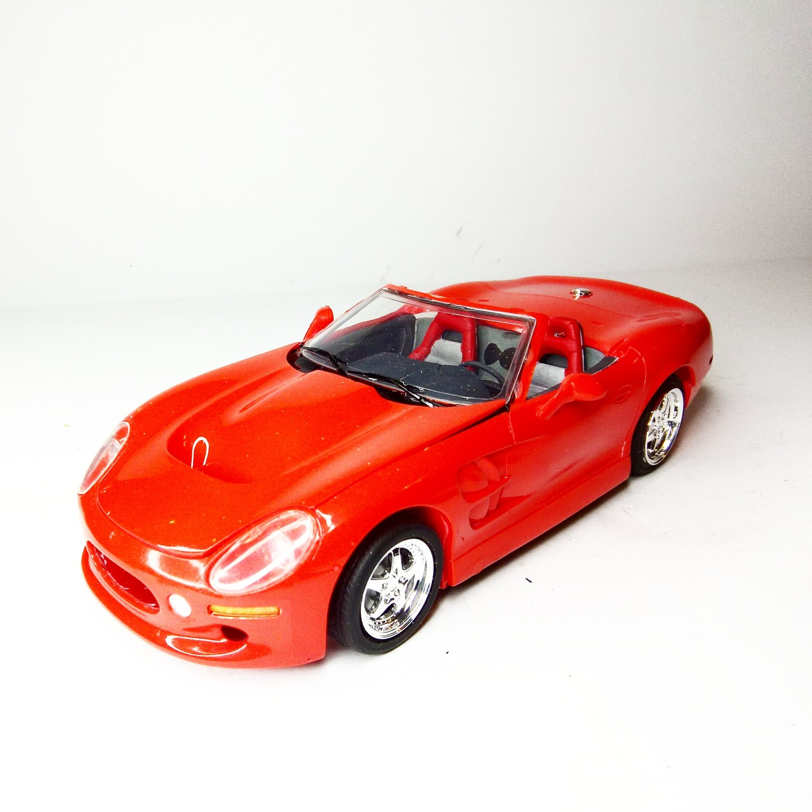
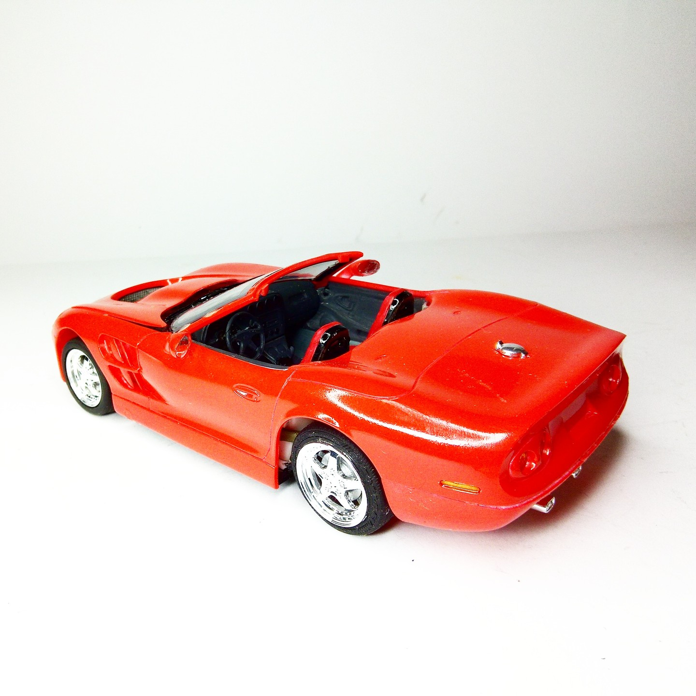

Auto e veicoli stradali · scale model archive
Shelby Series 1
Shelby Series 1 — Kit: Revell, Scale: 1/25. About the car: https://www.youtube.com/watch?v=CyfdCS3deDc&ab_channel=RareCars #1/25 #Revell #Shelby

Photo gallery

English description
About the car: https://www.youtube.com/watch?v=CyfdCS3deDc&ab_channel=RareCars
#1/25 #Revell #Shelby
Descrizione italiana
Sull’auto: https://www.youtube.com/watch?v=CyfdCS3deDc&ab_channel=RareCars